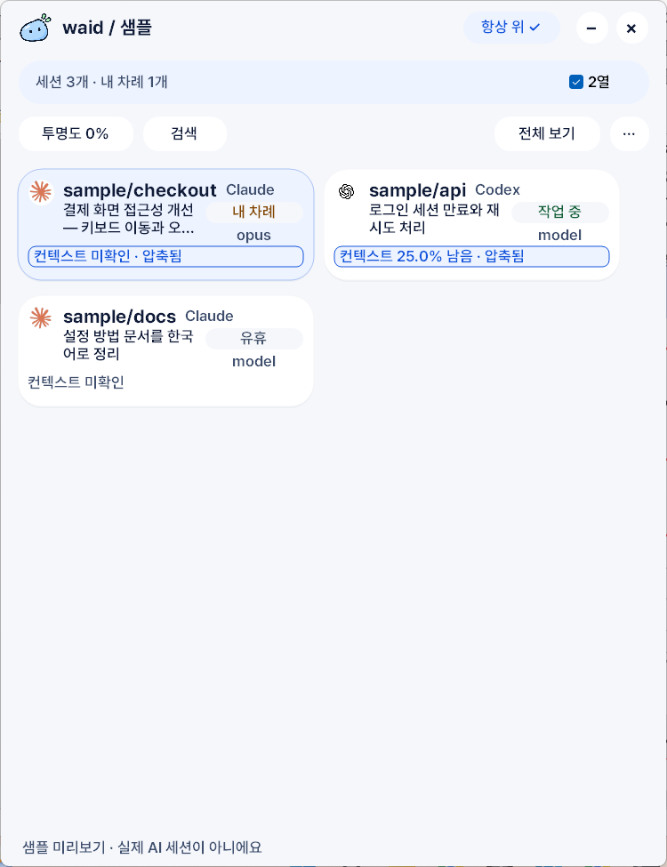
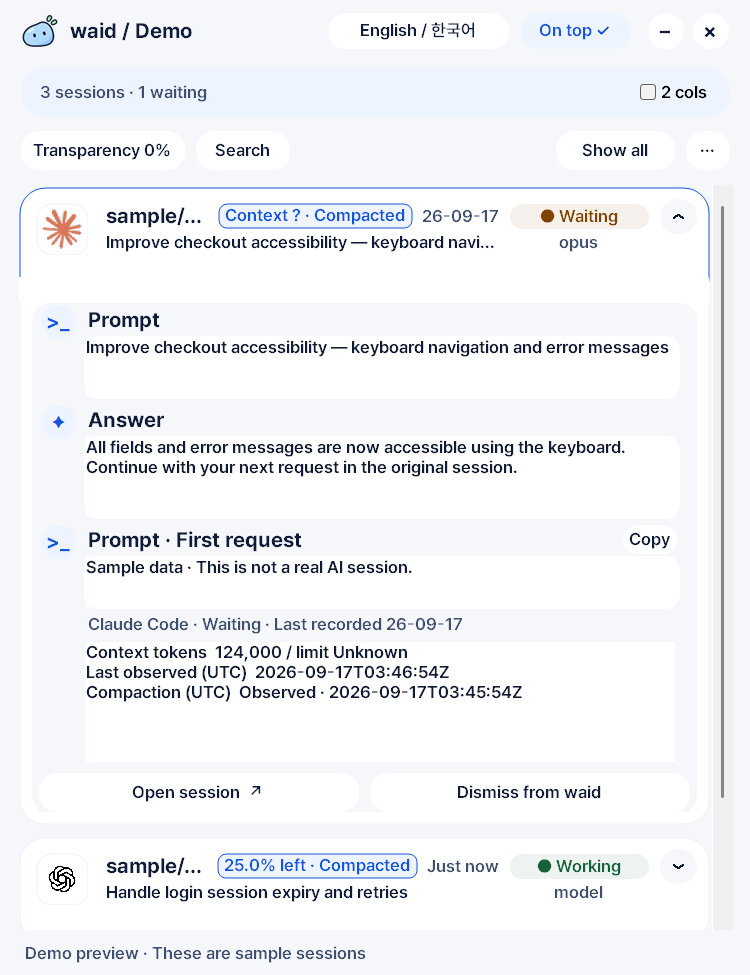

내가 뭐하고
있었지?
Claude Code에게 화면을 맡기고, Codex에게 API를 맡기고.
잠깐 다른 일을 하고 돌아오면, 하던 작업부터 찾게 됩니다.
waid는 여러 세션의 작업과 답변을 모아 보여줍니다.
현재 지원 Orca · Codex · Claude Code
Windows 10/11 x64 · EXE 하나 · 공개 v0.2.0은 한국어 UI
확인은 한곳에서.
Orca · Codex · Claude Code
셋에게 시켰으면,
끝난 한 명부터 보면 됩니다.
Orca에서 세션 세 개를 열고 다음처럼 일을 나눴다고 해보겠습니다. 요청은 평소처럼 각 도구에서 보냅니다. waid를 옆에 켜두면 프로젝트, 마지막 요청, 모델, 상태가 한 목록에 모입니다.
아래 작업과 화면은 사용법을 설명하기 위한 샘플입니다. 실제 사용자 사례나 성과 수치가 아닙니다.| 세션 / 도구 | 맡긴 일 | 화면의 상태 |
|---|---|---|
sample/checkoutClaude Code | 결제 화면의 키보드 이동과 오류 메시지 개선 | 내 차례 |
sample/apiCodex | 로그인 세션 만료와 재시도 처리 | 작업 중 |
sample/docsClaude Code | 설정 방법 문서를 한국어로 정리 | 유휴 |

먼저, ‘내 차례 1개’
모든 창을 돌지 않고 답변이 온 세션부터 찾습니다. 이 화면에서는 결제 화면을 맡긴 Claude Code가 다음 입력을 기다리고 있습니다.
API를 맡긴 Codex는 ‘작업 중’입니다. 우선 checkout의 결과를 읽고 다음 요청을 보내면 됩니다.
이름보다 맡긴 일로 찾기
세션 카드에 프로젝트와 마지막 요청이 함께 나옵니다. “세 번째 터미널이 뭐였지?” 대신 “결제 화면 고치던 것”으로 찾습니다.
목록을 2열로 놓거나 필요한 세션을 고정하면, 여러 작업을 나란히 보기에도 편합니다.
뭘 시켰고, 뭐라고 답했는지도 펼쳐봅니다.

마지막 답변을 확인하고
‘2열’을 해제하고 카드 헤더를 누르면 마지막 요청과 로그에 남은 답변을 읽을 수 있습니다. 샘플 답변은 키보드로 필드와 오류 메시지에 접근할 수 있게 바꿨다는 내용입니다.
“그럼 Tab 키로 끝까지 이동되는지 직접 확인하고, 빠진 부분을 이어서 요청하자.”
답변을 보고 다음에 할 일을 정한 뒤, 원래 세션에서 검토와 대화를 이어갑니다.
연결된 원래 세션으로
지원되는 연결이 있으면 도구 로고나 세션 열기(Open session)를 눌러 돌아갑니다. Orca는 현재 실행과 일치하는 기존 로컬 세션을 찾습니다.
연결이 없거나 오래된 경우에는 안내를 확인하고 원래 도구에서 세션을 직접 엽니다. SSH 세션 복귀는 지원하지 않습니다.
EXE를 켜고,
평소처럼 일을 시키세요.
Windows 10/11 x64에서 사용할 수 있습니다. waid가 지원하는 로컬 기록을 찾아 보여주므로, 요청과 답변은 쓰던 도구에서 그대로 이어갑니다.
실행 파일 하나를 받습니다
v0.2.0 릴리스에서
waid-v0.2.0-windows-x64.exe를 받습니다. 설치 프로그램이나 별도 런타임 없이 EXE를 실행하면 됩니다. GitHub의 Source code ZIP은 소스 코드입니다.공개 배포본은 한국어입니다. 실행 파일은 아직 Authenticode 서명이 없어 Windows 보안 기능이 차단할 수 있습니다. 릴리스에는 체크섬과 Sigstore 서명이 함께 제공됩니다. 다운로드 검증 안내 ↗
waid를 켠 다음, 원래 도구에서 새 요청을 보냅니다
Orca, Codex, Claude Code에서 평소처럼 작업을 시작합니다. 예를 들어 Claude Code에는 “결제 화면에서 Tab 키로 모든 입력칸에 갈 수 있게 해줘”, Codex에는 “로그인 만료 시 재시도 흐름을 확인해줘”라고 요청합니다.
waid를 켜기 전부터 있던 활동은 처음에 ‘미확인(Unknown)’으로 나올 수 있습니다. 실행 이후 새 요청·답변이 기록되면 그 기록을 바탕으로 상태가 바뀝니다.
프로젝트·요청·모델·상태를 봅니다
목록은 약 2초마다 갱신됩니다. 프로젝트 이름과 마지막 요청으로 세션을 찾고, ‘작업 중’인지 ‘내 차례’인지 확인하세요. 세션이 많으면 검색어로 프로젝트나 작업 내용을 좁힙니다.
내 차례 → 답변 확인작업 중 → 다음 작업으로미확인 → 새 기록을 기다리기카드 보기에서 요청과 마지막 답변을 펼칩니다
‘2열’을 해제하고 카드 헤더를 누릅니다. 시켰던 내용과 로그에 기록된 마지막 답변을 같은 카드에서 읽습니다. 답변을 읽고 원래 세션으로 돌아가 테스트 결과나 변경 사항을 확인한 다음, 추가 요청을 보냅니다.
컨텍스트 사용량은 도구가 기록한 값이 있을 때 표시됩니다. 화면의 남은 비율은 요금제 잔량이 아니며, 확인할 수 없는 값은 미확인으로 표시됩니다.
자주 보는 것은 고정하고, 끝난 것은 정리합니다
계속 볼 세션은 고정하고, 당장 필요 없는 세션은 숨깁니다. ‘항상 위’를 켜면 작은 waid 창을 다른 작업 창 위에 둘 수 있습니다. 지원되는 연결은 로고나 세션 열기로 복귀합니다.
Orca 복귀에는 앱에서 실행할 수 있는 Orca CLI와 현재 실행에 맞는 hook 연결 정보가 필요합니다. 별도로 연결한 창은 지원되는 창에 한해 돌아갑니다. 연결이 없으면 원래 도구에서 직접 여세요.
내 세션이 목록에 안 보이면?
먼저 ‘전체 보기’를 열고 검색·필터를 지워보세요. 원래 도구에서 새 요청을 보냈는지도 확인합니다. 기록 저장 위치나 읽기 권한이 다르면 빠질 수 있으므로, 계속 보이지 않으면 세션 누락 진단 안내를 참고하세요.
대화 내용은 어디로 가나요?
waid는 내 PC의 로그를 읽기 전용으로 읽고 로컬에서 처리합니다. 원격 분석, 클라우드 동기화, 외부 AI API 호출은 없습니다. 요청·답변 미리보기는 로컬 설정 파일에 남을 수 있으므로, 설정 파일을 공유할 때도 대화 기록처럼 다루세요.
창을 닫으면 수집도 끝나나요?
닫기 버튼은 waid를 시스템 트레이로 숨깁니다. 트레이 아이콘으로 다시 열 수 있고, 완전히 끝내려면 트레이 메뉴의 종료를 선택합니다.
클론해서 고쳐 쓰셔도 됩니다.
쓰는 툴이 없으면 알려주세요.
현재는 Orca, Codex, Claude Code를 지원합니다. Orca 안에서 돌리는 Codex·Claude Code 세션도 함께 봅니다. 각자 세션을 나누는 방식과 보고 싶은 정보가 다를 테니, 본인 일하는 방식에 맞춰 고도화해서 쓰셔도 좋겠습니다.
waid는 MIT 라이선스의 오픈소스입니다. 저장소를 클론하고, 필요한 부분부터 바꿔보세요.
git clone https://github.com/laekhole/what-am-i-doing.git소스에서 Windows 앱을 빌드하려면 Rust와 MSVC 빌드 도구가 필요합니다. 빌드 안내 · 템플릿 안내 · 어댑터 안내
“이 툴도 추가해주세요”라는 요청도 받습니다.
GitHub Issue에 남겨주시면 로그 구조와 연동 방법을 살펴보고 추가하겠습니다.
툴 이름, 운영체제, waid에서 보고 싶은 정보를 적어주세요. 세션이 안 보이는 문제라면 어떤 상황에서 빠지는지도 알려주시면 좋습니다. 개인 대화나 비밀키가 담긴 원본 로그는 올리지 않아도 됩니다.
공개 버전은 한국어
v0.2.0은 한국어 UI입니다. 위 영어 확장 화면은 최신 소스 빌드의 샘플입니다.
Windows 실행 제한 가능
EXE는 아직 Authenticode 서명 전입니다. SmartScreen이나 Smart App Control이 실행을 막을 수 있습니다.
macOS는 개발 중
지금 바로 받을 수 있는 데스크톱 배포본은 Windows x64용입니다.
“누가 나 기다리나”
궁금할 때, waid.
쓰다가 세션 하나가 안 보이거나, 내 방식과 안 맞는 부분이 생기면 알려주세요. 어떤 도구로 어떻게 일하는지부터 듣고 싶습니다.